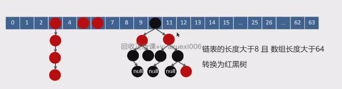

概念
与数组的区别
- 数组长度固定，集合长度可以动态增加
- 集合只能包含对象，不能包含基本数据类型
- 数组元素可以直接访问，集合要通过迭代器
线程安全的集合
Vector，Hashtable
Collection和Collections区别
- Collection是一个接口，定义了增删改查等方法，List、Set、Queue都实现这个接口
- Collections是一个工具类，可以用来对集合排序、查找、替换等操作，可以用在实现了Collection接口的类上。
集合迭代的方法
- for循环：循环过程中可以修改元素
- 增强for循环
- Iterator迭代器：要使用迭代器的set方法进行修改
- ListIterator迭代器
- ForEach：循环过程中不建议修改集合内元素
- Stream API
List<String> list =new ArrayList<>(); list.add("A"); list.add("B"); list.add("C"); //---------------------------------------- for(int i=0; i < list.size();i++){ String element = list.get(i); System.out.println(element); } //---------------------------------------- for(String element:list){ System.out.println(element); } //---------------------------------------- Iterator<String>iterator= list.iterator(); while(iterator.hasNext()){ String element =iterator.next(); System.out.println(element); } //---------------------------------------- ListIterator<String>listIterator= list.listIterator(), while(listIterator.hasNext()){ String element = listIterator.next(); System.out.println(element); } //---------------------------------------- list.forEach(element ->System.out.println(element)); //---------------------------------------- list.stream().forEach(element ->System.out.println(element));
ArrayList
为什么索引从0始
如果从0开始，那么寻址就是base+i*size，从1开始的话就是base+(i-1)*base，多了个减法，效率慢。
List源码
成员变量
默认大小10。但是初始化时没定义大小的话，此时长度为0，插入第一个元素时扩容为10。
elementData：保存数据的数组，是Object数据类型的
构造函数
有参
将传进的参数直接设置为Object数组的长度
无参
并没有new数组，插入元素的时候才new数组

传入容器
首先将传入的容器转化为数组，注意是Object数组
如果传入参数的类型就是ArrayList，那么直接赋值，
如果不是，将数组copy
关键方法
add
添加第1个元素：因为次数elementData还没创建，所以会创建一个默认大小为10的数组
添加2~10个元素：数组内容量够用，直接添加，不会有扩容。
添加第11个元素：数组容量增加为1.5倍
上面的代码是java8的，java17进行了修改
面试题
ArraysList底层实现原理？
- 动态数组实现
- 初始容量为10，插入第一个数据后初始容量为10
- 扩容是扩1.5倍，如果1.5倍不够用，则扩为目前需要的容量。
- 扩容需要拷贝数组
ArrayList<Integer> list = new ArrayList<>(10),扩容了几次？0次
0次
数组与list转化
- 数组转list后，修改数组内容，List受影响吗？受影响。因为源码只是给数组套了个List壳子。这个ArrayList是在Arrays内部创建的内部类。这个方法创建的list就不要想着增加或者删除元素了(源码没有这个方法)，但是可以修改
- list转数组后，修改list内容，数组受影响吗？不影响。因为返回值是是拷贝到了一个新的数组。深拷贝
List和数组的转换 数组转换为list 直接调用Arrays.asList()即可，如下图 list转换为数组 使用.toArray()方法，无参的话会返回Object数组 传递参数.toArray(new Integer[0]),这样就可以转换为Integer数组 new Integer[0]也可以写成new Integer[list.size()]，不过没什么必要。 算法md笔记里面有


与list的区别
list大小固定，不能修改，ArrayList会动态增长。
list不支持泛型。
list能存储基本数据类型，Arraylist需要存储其对对应包装类。
线程不安全举例
暴漏的三个问题都是基于add代码的
public boolean add(E e){ ensureCapacityInternal(size +1),//Increments modCount!! elementData[size++]=e, return true; } add代码
- 部分值为null
- 两个线程插入数据，同时判断剩余空间满足后
- 两个线程都插入到size位置，比如size=9
- 然后size都加1，size就变成了11
- 10位置变成了null
- 索引越界异常
- 线程1和2同时发现size为9，能存下
- 线程1存下后size变为10
- 但是此时线程2已经检查过能不能存下了
- 线程2执行存入操作的适合就会数组越界
- size++出错
- 因为size++分为三部：获得值，加一，覆盖旧值
- 在多线程下很容易执行两次size++，结果size就加了1.
ArraysList与LinkenList
区别- 底层数据结构不同，一个是动态数组，一个是双向链表
- 数组按下标查询快，linked不支持下标查询。
- 数组空间利用率高，链表空间利用率低
- 两者线程都不安全
- 如何保证安全使用？1.方法内使用。2.用线程锁修饰一下。
- 使用场景不同，链表适合频繁插入和删除操作环境，顺序表适合随机访问环境
- 如何保证安全使用？1.方法内使用。2.用线程锁修饰一下。
删除指定元素ArrayList和LinkedList都有remove方法，可以删除指定下标元素
ArrayList和LinkedList都有remove方法，可以删除指定下标元素
HashMAP
时间复杂度：最好O(1)，最坏O(n)，平均情况下O(logn)
HashMap的实现原理
- 底层使用散列表或者红黑树，拉链法
- 存储时
- 如果key相同，则覆盖旧值
- key不同，则插入链表。链表长度大于8且数组长度大于64，那么链表转换为红黑树。
- 为什么是8？统计学上得出来的
- 红黑树节点个数为6的话退化为链表，不是8，因为避免链表和红黑树频繁转换。
 - 获取时根据key找到对应下标，然后从链表或者红黑树内查找目标值
HashMap在1.7和1.8的区别
1.7是单纯的拉链法，遇见冲突，直接补充在了链表内
1.8新增了红黑树，当链表长度大于8，且数组长度大于64，则链表进化为红黑树。
HashMap源码
常见属性
默认容量：16
加载因子：0.75 也就是当存储元素大于16*0.75个时，就会进行扩容，不像list满了才扩。
Node table; 存储数据的数组
node是内部类，有key，value。有next方便指向拉链法下一个节点
构造函数
无参
仅设置了加载因子，也没有初始化数组
常用函数
PUT

public V put(K key, V value) { // 只用关注前三个值：哈希值、key、value return putVal(hash(key), key, value, false, true); } final V putVal(int hash, K key, V value, boolean onlyIfAbsent, boolean evict) { Node<K,V>[] tab; Node<K,V> p; int n, i; // 如果是第一次插入，那么对数组进行扩容 if ((tab = table) == null || (n = tab.length) == 0) n = (tab = resize()).length; // 判断数组内该位置是否为空，为空的话直接插入 if ((p = tab[i = (n - 1) & hash]) == null) tab[i] = newNode(hash, key, value, null); else { Node<K,V> e; K k; // 如果数组内当前位置就是这个key，则直接新值覆盖旧值 if (p.hash == hash && ((k = p.key) == key || (key != null && key.equals(k)))) e = p; // 如果是红黑树 else if (p instanceof TreeNode) e = ((TreeNode<K,V>)p).putTreeVal(this, tab, hash, key, value); // 如果是链表，则查找该key，直到链表末尾 else { for (int binCount = 0; ; ++binCount) { if ((e = p.next) == null) { p.next = newNode(hash, key, value, null); if (binCount >= TREEIFY_THRESHOLD - 1) // 如果插入后链表长度大于8，那么进化为红黑树 treeifyBin(tab, hash); break; } if (e.hash == hash && ((k = e.key) == key || (key != null && key.equals(k)))) break; p = e; } } if (e != null) { // existing mapping for key V oldValue = e.value; if (!onlyIfAbsent || oldValue == null) e.value = value; afterNodeAccess(e); return oldValue; } } // 不是覆盖旧值的情况下，插入新元素，要判断是要扩容 ++modCount; if (++size > threshold) resize(); afterNodeInsertion(evict); return null; } put源码
resize
为什么链表要进行遍历，红黑树不用？可能是红黑树调用的额外的函数，该函数内部处理了。
元素扩容前后的位置会改变
扩容是容量扩两倍，因为是左移一位
final Node<K,V>[] resize() { Node<K,V>[] oldTab = table; int oldCap = (oldTab == null) ? 0 : oldTab.length; // 阈值 int oldThr = threshold; int newCap, newThr = 0; if (oldCap > 0) { // 达到扩容上限，就不再扩容了 if (oldCap >= MAXIMUM_CAPACITY) { threshold = Integer.MAX_VALUE; return oldTab; } // 阈值和数组长度都增加一倍 else if ((newCap = oldCap << 1) < MAXIMUM_CAPACITY && oldCap >= DEFAULT_INITIAL_CAPACITY) newThr = oldThr << 1; } else if (oldThr > 0) newCap = oldThr; // 初始化后首次插入元素会执行这句，设置默认容量和阈值 else { newCap = DEFAULT_INITIAL_CAPACITY; newThr = (int)(DEFAULT_LOAD_FACTOR * DEFAULT_INITIAL_CAPACITY); } if (newThr == 0) { float ft = (float)newCap * loadFactor; newThr = (newCap < MAXIMUM_CAPACITY && ft < (float)MAXIMUM_CAPACITY ? (int)ft : Integer.MAX_VALUE); } // 创建新的数组和设置阈值 threshold = newThr; @SuppressWarnings({"rawtypes","unchecked"}) Node<K,V>[] newTab = (Node<K,V>[])new Node[newCap]; table = newTab; // 转移元素 if (oldTab != null) { for (int j = 0; j < oldCap; ++j) { Node<K,V> e; if ((e = oldTab[j]) != null) { oldTab[j] = null; // 仅有一个值，没有后继时 if (e.next == null) // 计算在新数组中的位置 newTab[e.hash & (newCap - 1)] = e; // 后继是红黑树时调用这个 else if (e instanceof TreeNode) ((TreeNode<K,V>)e).split(this, newTab, j, oldCap); // 后继是链表，这种情况比较复杂，需要遍历链表 else { Node<K,V> loHead = null, loTail = null; Node<K,V> hiHead = null, hiTail = null; Node<K,V> next; do { next = e.next; if ((e.hash & oldCap) == 0) { if (loTail == null) loHead = e; else loTail.next = e; loTail = e; } else { if (hiTail == null) hiHead = e; else hiTail.next = e; hiTail = e; } } while ((e = next) != null); if (loTail != null) { loTail.next = null; newTab[j] = loHead; } if (hiTail != null) { hiTail.next = null; newTab[j + oldCap] = hiHead; } } } } } return newTab; } 源码
hash
计算哈希值的函数
其中 ^ (h >>> 16)是为了让计算得到的哈希值在数组内分布更加均匀
static final int hash(Object key) { int h; return (key == null) ? 0 : (h = key.hashCode()) ^ (h >>> 16); } 源码
重写equal和hashcode需要注意什么
- 如果o1.equals(o2)，那么o1.hashCode() == o2.hashCode()总是为true的。
- 如果o1.hashCode() == o2.hashCode()，并不意味着o1.equals(o2)会为true。
不注意这两点的话，会导致：
HashMap在比较元素时，会先通过hashCode进行比较，相同的情况下再通过equals进行比较。
所以 equals相等的两个对象，hashCode一定相等。hashCode相等的两个对象，equals不一定相等（比如散列冲突的情况）
重写了equals方法，不重写hashCode方法时，可能会出现equals方法返回为true，而hashCode方法却返回false，这样的一个后果会导致在hashmap等类中存储多个一模一样的对象，导致出现覆盖存储的数据的问题，这与hashmap只能有唯一的key的规范不符合。
面试题
PUT方法具体流程
- 判断数组是否为空，第一次插入需要进行扩容
- 根据hash值找到目标位置
- 判断目标位置是否为null，为空可直接添加新节点
- 不为空
- 判断收个元素是否是目标key，是的话进行覆盖
- 判断是否为红黑树，是的话直接插入
- 遍历链表，在尾部插入value，如果长度大于8，则进化为红黑树
- 最终判断数组大小是否需要扩容
HashMap的扩容机制
HashMap的寻址算法
首先得到哈希值
比如说某个元素的hash值为97，数组长度为16，那么位置就是97%16
但是计算机内这样计算比较慢，所以使用97 & (16 - 1)，效率高
二进制操作比较快，而且两者是等价的
因此，数组长度必须是2的n次幂，不然两个式子是不等价的。
数组长度为2的n次幂
- 方便计算位置（上面讲了）
- 扩容时长度重新计算位置的效率更高
为什么String当key
用 string 做 key，因为 String对象是不可变的，一旦创建就不能被修改，这确保了Key的稳定性。如果Key是可变的，可能会导致hashCode和equals方法的不一致，进而影响HashMap的正确性。
并且key可以为null，因为key不能重复，所有null只能有一个。
如果把一个对象当key，放进去之后，会记录hash值(final修饰)，如果修改了对象内的属性，就在HashMap找不到这个键值对了，因为hash值变了。
为什么不用平衡二叉树
- 平衡二叉树追求完全平衡几乎每次插入删除都要进行旋转
- 红黑树是弱平衡，不需要平凡调整，性能高。
多线程下可能的问题
- JDK1.7中的 HashMap 使用头插法插入元素，在多线程的环境下，扩容的时候有可能导致环形链表的出现，形成死循环。因此，JDK1.8使用尾插法插入元素，在扩容时会保持链表元素原本的顺序，不会出现环形链表的问题。
- 多线程同时执行 put 操作，如果计算出来的索引位置是相同的，那会造成前一个 key 被后一个 key 覆盖，从而导致元素的丢失。此问题在JDK 1.7和 JDK 1.8 中都存在。
Map和Table的区别
- HashMap线程不安全，HashTable线程安全
- Map的key可以为null，Table的key不能为null
- Table被淘汰了，一般用ConcurrentHashMap
- 是加锁了的
MAP
快速遍历
- for-each循环和entrySet()方法
- for-each循环和keySet()方法
- Iterator迭代器
- Lambda表达式和forEach()方法
- Stream API
Map<String, Integer> map = new HashMap<>(); map.put("key1", 1); map.put("key2", 2); map.put("key3", 3); // 使用for-each循环和entrySet()遍历Map for (Map.Entry<String, Integer> entry : map.entrySet()) { System.out.println("Key: " + entry.getKey() + ", Value: " + entry.getValue()); } // 使用for-each循环和keySet()遍历Map的键 for (String key : map.keySet()) { System.out.println("Key: " + key + ", Value: " + map.get(key)); } // 使用迭代器遍历Map Iterator<Entry<String, Integer>> iterator = map.entrySet().iterator(); while (iterator.hasNext()) { Entry<String, Integer> entry = iterator.next(); System.out.println("Key: " + entry.getKey() + ", Value: " + entry.getValue()); } // 使用Lambda表达式和forEach()方法遍历Map map.forEach((key, value)->System.out.println("Key: " + key + ", Value: " + value)); // 还可以进行其他操作，如过滤、映射等 Map<String, Integer> filteredMap = map.entrySet().stream() .filter(entry -> entry.getValue() > 1) .collect(Collectors.toMap(Map.Entry::getKey, Map.Entry::getValue)); System.out.println(filteredMap);